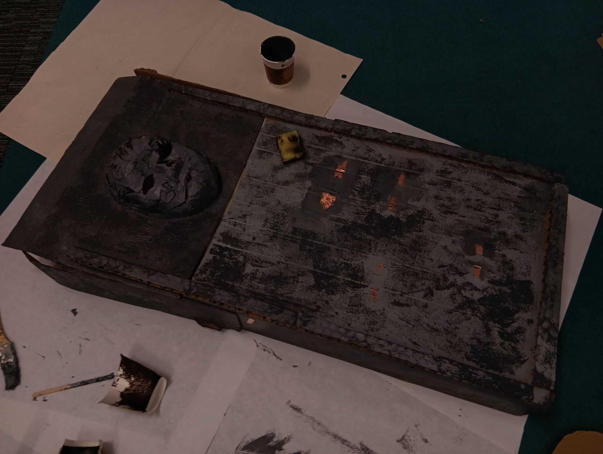

Bridging Theatre and Gamedev (with Demons)
Summon your very own theatrical origin story in 12 easy steps!
02/07/2024
At the end of June, I participated in a Design Lab in collaboration between Now Play This and Abertay University, which… was basically just a really fancy game jam. But the general atmosphere of the jam, and the general headspace my cognitive lily pad has been floating in as of recent - led me to reconnect with my origin story, and create something that I am so incredibly proud of.
Before moving to Dundee - I spent 6 years doing Youth Theatre at Beacon Arts Centre in Greenock, Inverclyde, and eventually acted as a volunteer facilitator, running workshops for the younger kids. We devised a bunch of plays! I think the one that sticks with me the most was when we got kids from around Inverclyde to send us short stories for us to adapt into shows. We ended up putting on a big musical with props and costumes about Naughty Cat stealing a rocket, flying to the moon made of cheese, inhabited by chocolate mice - and having to be stopped and arrested by SUPER PLOD (and his dog). (I may have been his dog). The general spirit of that - spinning gold from twine, taking the most genuine sparks and dashing them with as many layers of highlighter as I can get my hands on - inspired what would become my development process a lot more than I could have known at the time.
Running the workshops at BYT (Beacon Youth Theatre) was huge for me - it was a huge step for me to genuinely step outside my anxiety and to see into the minds of others. When I was young, I could barely talk to anyone; and volunteering as a facilitator really threw me directly into the scorpion pit; and directly influenced how I talk to people now. My confidence in communicating purely comes from this: finding the sparkles of artistic identity in what people do, and conversing with them through that. I’d basically be trying to get these kids to do improv exercises, trying to assess what they were good at - meanwhile I was really figuring out how to improv my way through conversation at the exact same time.
For some reason, when I started studying game dev - I felt a disconnection with that side of me. I think my time at Abertay felt very focused on the programming, the technical, the scientific implementation of games, rather than the art. It’s funny, because when I was leaving BYT, I literally said that it was going to be a nice intersection of the more technical and artistic sides of my brain to the class - but in retrospect, I don’t think I really believed that. It took me a long time to realise that these things… are the same. That all creation is creation - and game dev is just another flavour of theatre.
It was actually music that gave me that revelation, rather than theatre. When I was in my 3rd year of Abertay - I realised that I was incredibly passionate about both the analysis and creation of music; and that passion for creating games with which I applied to Abertay in the first place was waning. When I actually got the chance to make creative projects; I realised this was all the same, and that all I wanted to do was create. And looking back at my childhood - that’s kind of what I always wanted to do - just that BYT was really the only outlet I had to encourage that. Now, as an adult, all of these mediums feel right at my fingertips. And it feels amazing.
That brings me to Daemonium Motus - a theatrical exhibit created as part of the aforementioned jam. The whole jam felt themed around alternate ways of play, and alternate methods of thinking.
Alex Johansson gave a great talk about how alternate control methods should match the human experience. Building experiences that are intuitive is something that I’ve been thinking about ever since I did Dare - but I’ve been, at the very least, trying to make them intuitive for gamers, or at the very least intuitive for people that use a computer. Hearing the story about a woman who created a controller inspired by lottery scratch-cards, intuitively, because that is a staple of human design - totally opened my eye to the next step of alt controller design.
Claire Morwood made this super cool talk literally in engine, and passed around physical assets for her game Asterism. I played this a few weeks ago at an in person Biome Sharing and I’ve been extremely inspired by the mixed media style! Seeing the physical assets getting passed around, and how they were used in the game, has really made me want to craft more experiences around the intersection of physical and digital. I felt similarly after playing Hylics last year; I really need to get on messing around with some clay and textures. Working with Claire on Daemonium Motus was such a joy.
Both of those talks were on the first day and definitely stayed in my mind when concepting it - but Mona Bozdog’s talk on day two also hugely inspired me, although more on a personal level. She talked about the winding path of her background in theatre leading to the creation of different interactive experiences - diverging through games, public art, theatre, and everything in between. Obviously I’m not some kind of theatrical genius with a stacked back catalogue - but it did really mean a lot to me to see the interconnected experiences of a single artist, and the non-linear creative path. When graduating Abertay, I honestly felt a little insecure about how I wasn’t really directly going to “the next stage” of game dev, whatever that was. Now I can see that taking the road less travelled is my greatest strength. (Or maybe just my greatest comfort).
Seeing everyone play Daemonium Motus, and summoning their very own demon in 12 easy steps, and it actually working - felt like a kind of magic. The kind of magic that the stage is all about. The smoke and mirrors, the sounds and code, the cardboard and copper. The magic of creating, and interfacing with an audience, of finding an audience, or letting them find you. Basically, it felt really really cool.
I so totally want to do something further with it, or something else within this vein. At the very least, we need to another exhibit at Abertay so Claire can join in since she wasn’t able to be there on day 2 of the jam - but I think it would be cool to show it off somewhere else! Wherever the weird and wonderful would fit in. I’ve always known that games can be a lot more than the box I’ve seen them be put in - but it’s nice and inspiring to know that I can be the one who digs them out of that box and makes them new again.